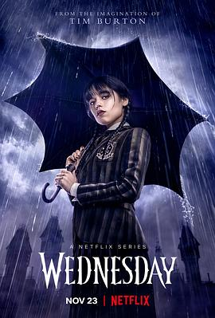

7.8
星期三
Wednesday Season 1
2022
美国
评分 7.8
导演:
蒂姆·波顿 / 甘加·蒙泰罗 / 詹姆斯·马歇尔
演员:
詹娜·奥尔特加 / 格温多兰·克里斯蒂 / 克里斯蒂娜·里奇 / 凯瑟琳·泽塔-琼斯 / 路易斯·古兹曼 / 艾玛·迈尔斯
类型:
喜剧,奇幻,悬疑
剧情简介
星期三·亚当斯（詹娜·奥尔特加 饰）因一系列“惹祸事件”被送往奈弗莫尔学院——一所专收异能学生的怪诞学校。她冷峻、讽刺、孤僻的个性让她从踏入校园那刻起就成为众人焦点，而她自己却只对两件事感兴趣：揭开母亲当年的校史秘密，以及调查森林中接连发生的离奇凶案。奈弗莫尔表面上充满校园氛围，但在走廊、温室与深林之间，暗藏着足以颠覆整个小镇的秘密。星期三意外获得“幻视”能力，那些破碎的画面让她意识到连环杀人案与学校、与小镇、甚至与她家族的过往紧密相连。她一边追查线索，一边应对奇怪的同学与老师：室友伊妮德是个色彩爆棚的狼人女孩，与她形成鲜明反差；校长神秘、教师诡异，同学们各自隐藏心思。星期三的调查不断触碰底线，令她与校方冲突，也让她被卷入一场远超学生范畴的危险阴谋。尽管她看似冷漠、嘴巴毒辣，但面对朋友与真相时，她的责任感与勇气逐渐显露。她在推理、追凶、对抗怪物的过程中，也慢慢学会与他人建立连结，甚至开始反思自己与家庭的复杂关系。《星期三》将黑色幽默、青春悬疑与奇幻元素巧妙融合，在暗黑气质与轻松节奏之间保持独特平衡，展现了一位“怪女孩”寻找自我、直面真相的成长旅程。